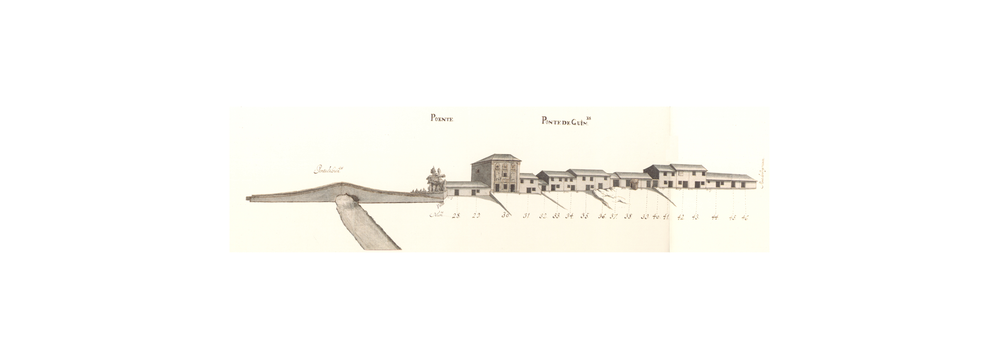

Ponte de Guimarães - Norte

Ponte de Guimarães - Poente
Parte terminal da longa artéria que, sensivelmente em linha recta, descia a Arcada para a ponte sobre o rio Este.
Zona rural por excelência, tinha no seu termo uma ponte quinhentista de um só arco, canopial, e que infelizmente foi destruída em data desconhecida.
Os dois alçados que vemos no Mappa não são, os dois lados da rua, como à primeira vista poderá parecer; o Norte vai corresponder à parte Oeste do actual largo do Senhor dos Aflitos ou, segundo a toponímia popular, das Latinhas: e o Poente é a parte final da avenida da Liberdade, lado Oeste entre a Rua Conselheiro Lobato e o rio.
Nestes alçados onde coexistem habitações de dois pisos (52,7%) alternando com outras de um só piso (47,2%), e uma única de três pisos, toda a ruralidade da zona está bem patente: casas baixas, com a porta de entrada ladeada de uma janela (55,5%), janelas vazadas que seriam tapadas por portas de madeira, desalinhamento da linha das fachadas, etc.
Constrastando há um excelente edifício de três pisos, em pedra, do séc. XVII, contido em duas fortes pilastras, com portas e janelas com "moldura" de pedra, almofadas sob as janelas do piso nobre e três óculos magnificamente trabalhados no 2º andar.
Como elemento curioso na rua há o forno(?) de pedra exterior à casa, no prazo nº 38.
As 23 casas do lado Norte e 15 do Poente são todas prazos do Cabido.